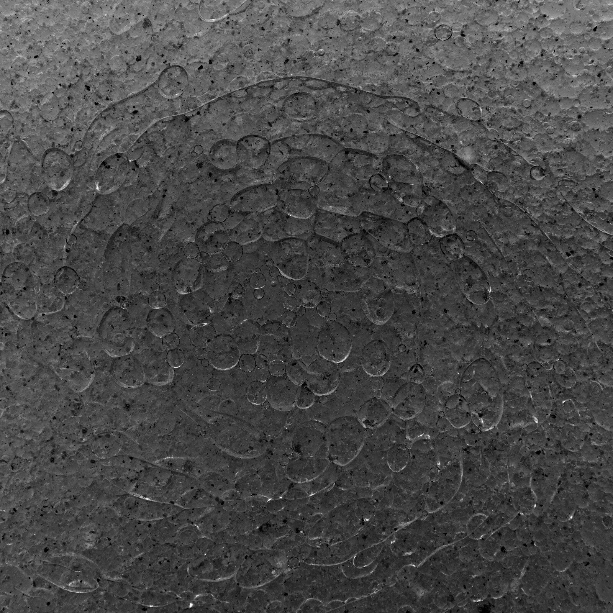
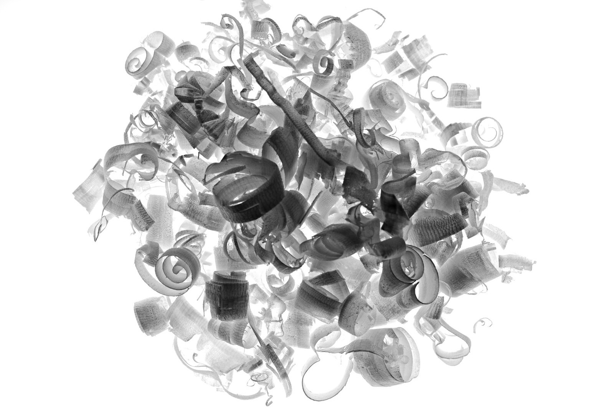
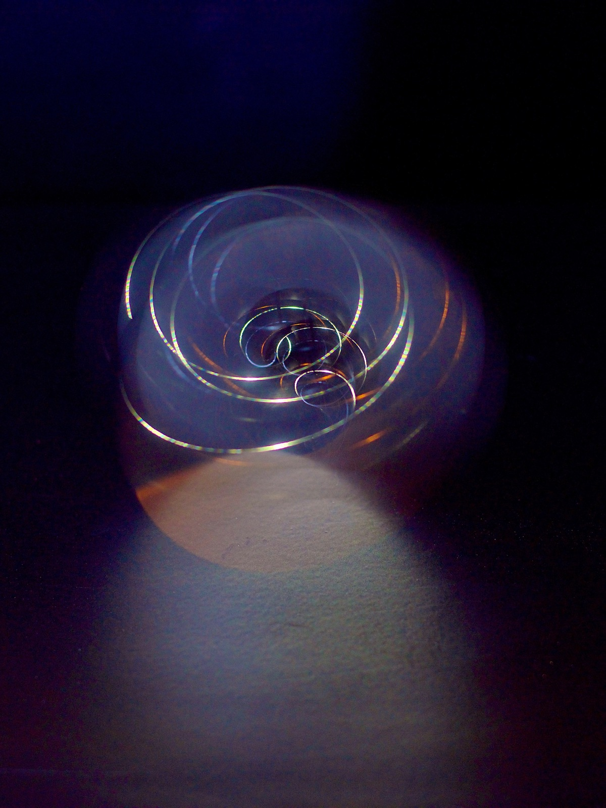
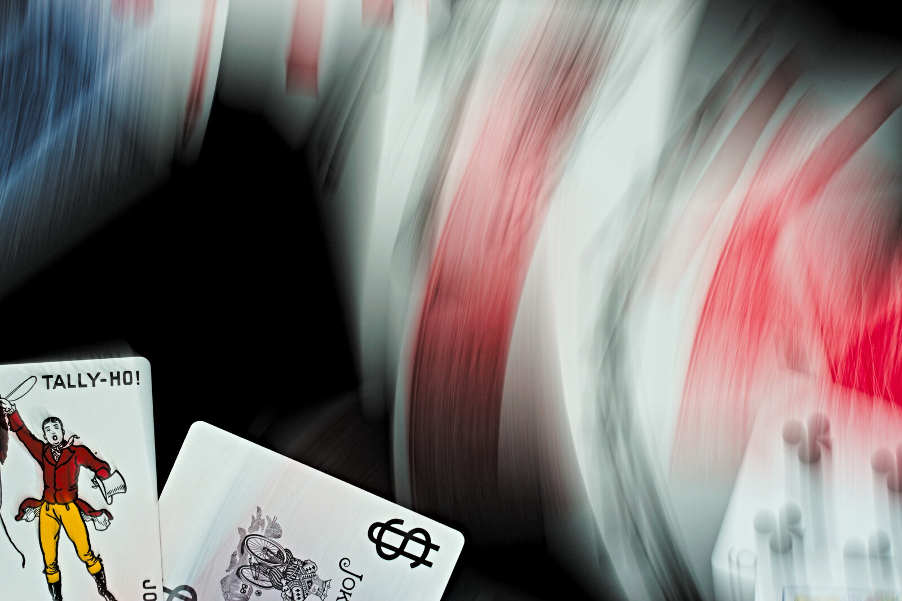
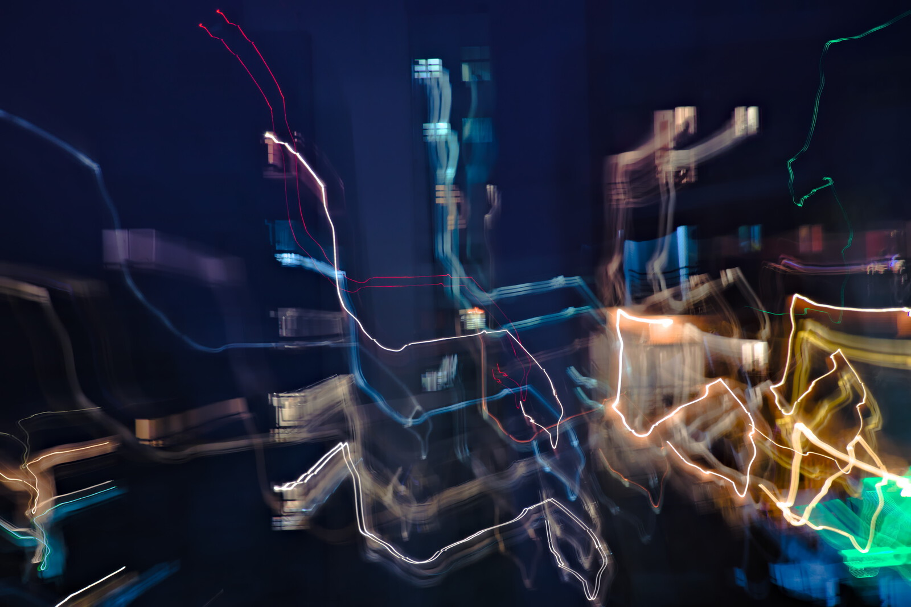
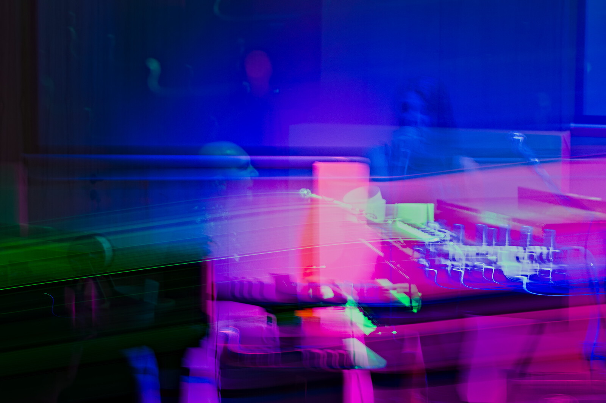

Cuando tirás un dado sabés que va a salir un número del 1 al 6, pero no sabés cuál. Cuando lanzás una moneda sabés que no se va a transformar en un billete pero no podés asegurar qué cara va a quedar arriba. Incluso sabés que si tirás un vaso de vidrio al suelo se va romper en pedazos, pero no sabés exactamente en cuántos pedazos.
Podés construir un sujeto para fotografiar al azar. ¿Cómo hacés un sujeto aleatorio? Podés tirar un montoncito de tierra y soplarlo, podés romper una hoja y mirar con atención la rotura o podés mezclar agua y aceite y revolver con fuerza.
 Cuando estás frente a un sujeto impredecible podés dejar que dibuje con su movimiento. Suele hacer falta un trípode para que la cámara esté quieta mientras mantiene abierto el obturador (el tiempo puede variar mucho).
 El movimiento es relativo, así que si tu sujeto no se mueve podés mover la cámara. Podés incluso cambiar la longitud focal del lente (en castellano se dice usar el zoom). Podés incluso hacer que dos cantantes alejados entre sí entren en la misma foto.
 